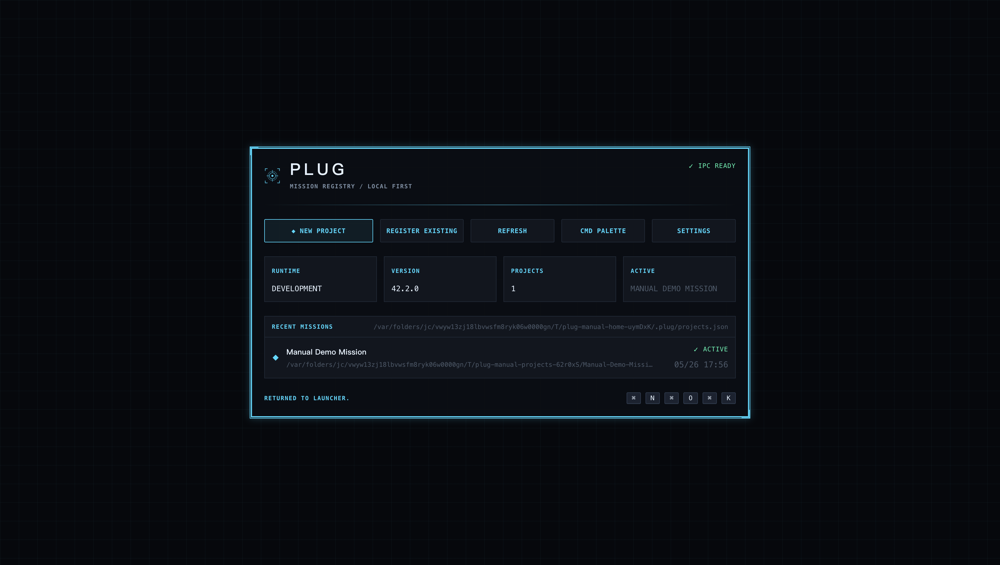
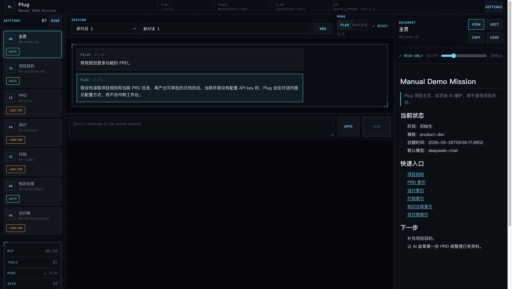
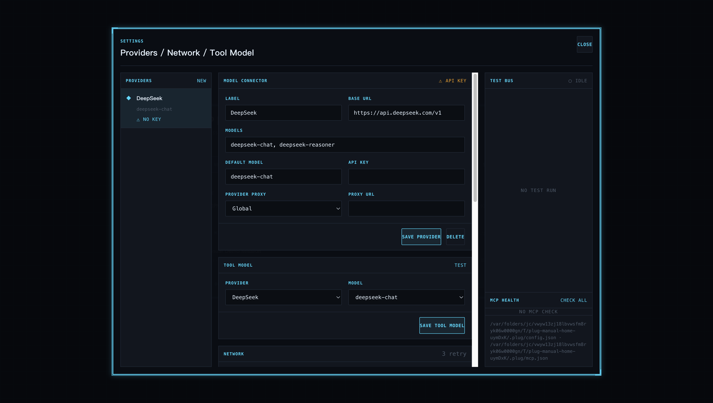

Plug 产品说明书
Plug 是一个本地优先的桌面 AI 工作台，用项目目录作为任务现场：创建项目、维护文档、执行对话、追踪工具调用，并通过审批机制控制 AI 写入。
Runtime
Electron
IPC
Ready
Mode
Plan / Execute
Version
42.2.0
Start Here
现在怎么测试
- 在项目根目录运行
npm run dev。 - 使用自动弹出的 Electron 桌面窗口测试，不要使用浏览器里的
localhost:5173页面。 - 首次使用可以点
New Project创建项目，或点已有项目进入 Workspace。
注意：
浏览器预览页没有 Electron preload，因此无法创建项目、读写文件或调用聊天 IPC。真实测试入口必须是 Electron 桌面窗口。
Screenshots
界面截图



Core Flow
核心使用流程
| 阶段 | 操作 | 产物 |
|---|---|---|
| 创建项目 | 从 product-dev 模板创建本地项目。 |
.plug/manifest.json、项目章节、规则、记忆和会话目录。 |
| 阅读与编辑 | 在右侧文档面板打开 Markdown，切换 View/Edit 后保存。 | 项目目录内的 Markdown 文档，写入被限制在项目根目录内。 |
| AI 对话 | 在中间会话区输入任务，选择 Plan 或 Execute。 | 会话消息、工具调用事件、待审批改动。 |
| 审批执行 | 对 create/edit/delete/command/MCP confirm 工具进行批准或拒绝。 | 可追踪的审批结果；confirm MCP 工具批准前不会真正调用外部 server。 |
| 扩展能力 | 配置 Prompt Apps、Skills、MCP、Memory、Artifacts baseline。 | 更接近 Alma 的项目化 AI 工作台能力。 |
Keyboard
常用快捷键
Cmd/Ctrl + N |
打开新项目向导。 |
Cmd/Ctrl + O |
登记现有本地项目目录。 |
Cmd/Ctrl + K |
打开命令面板。 |
Cmd/Ctrl + , |
打开设置。 |
Cmd/Ctrl + R |
刷新项目注册表。 |
Cmd/Ctrl + T |
在 Workspace 中创建新会话。 |
Verification
本次可测试状态
本说明书生成前已完成以下验证：
npm run typecheck PASS mcp stdio tool injection npm run build PASS agent tool adapter PASS no-key chat fallback PASS provider failure chat fallback
当前实现已经能创建/登记项目、打开 Workspace、读写 Markdown、运行本地无 key 对话降级、配置模型供应商、管理 Prompt Apps、显示工具事件、配置 MCP server，并对 confirm 级 MCP 工具执行审批保护。
Known Limits
当前限制
- Alma parity 仍未完全完成：Playwright web tools、Chrome relay、完整 Artifacts、向量化 semantic memory、发布打包等还在后续 slice。
- 没有配置供应商 API key 时，Plug 会在对话内给出配置提示；这是可用降级，不是崩溃。
- MCP 目前是 stdio JSON-RPC baseline；复杂 MCP transport 和更完整的 UI 管理仍可继续加强。